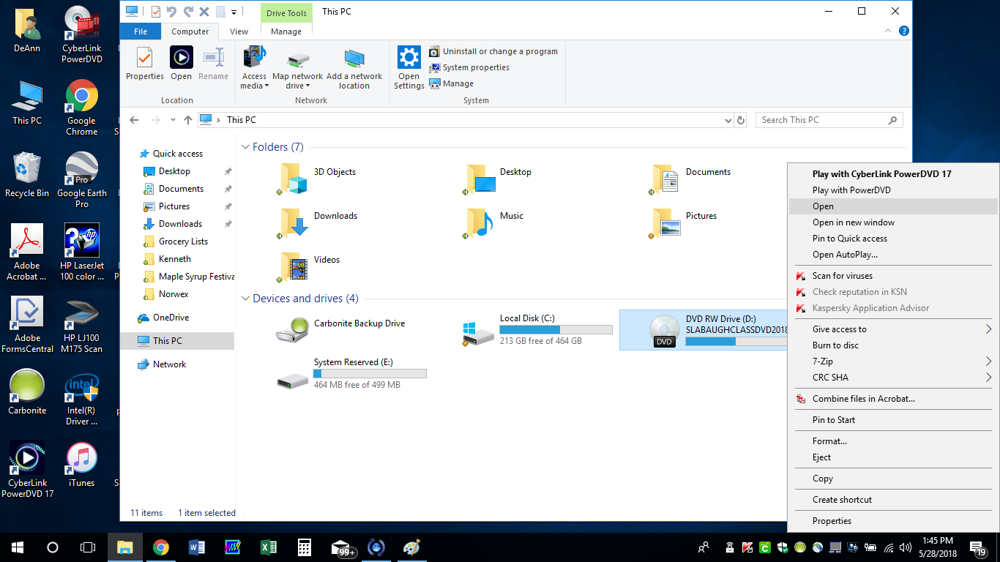
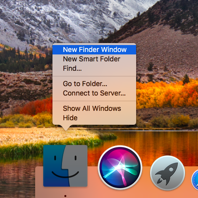
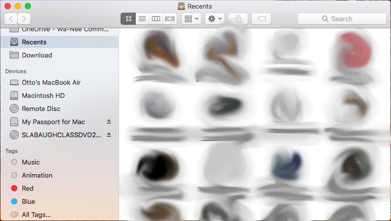
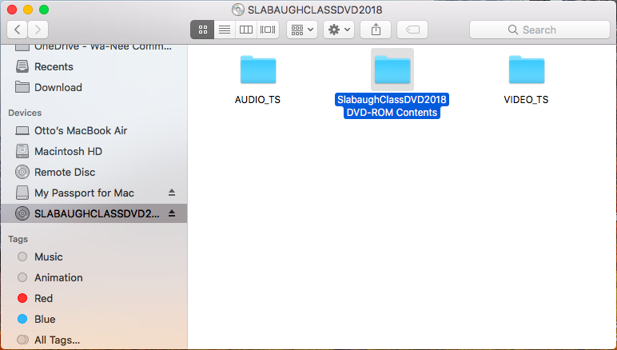

1. Insert DVD into a DVD drive
Note: Please make sure the "shiny" side is down so that the sticker is up.
2. Go to "This PC"
This can be done by searching for "File Explorer" and then clicking "This PC"
3. Right-Click the DVD icon and select "Open"

4. The photos are in a folder called "SlabaughClassDVD2018 DVD-ROM Contents"
WARNING: DO NOT CHANGE ANYTHING IN THE OTHER FOLDERS OR THE DVD WILL BECOME UNPLAYABLE.
1. Insert DVD into an external "SuperDrive"
2. Open a new Finder window or tab

3. Click "SLABAUGHCLASSDVD2018" in the "Devices" section

4. The photos are in a folder called "SlabaughClassDVD2018 DVD-ROM Contents"

WARNING: DO NOT CHANGE ANYTHING IN THE OTHER FOLDERS OR THE DVD WILL BECOME UNPLAYABLE.